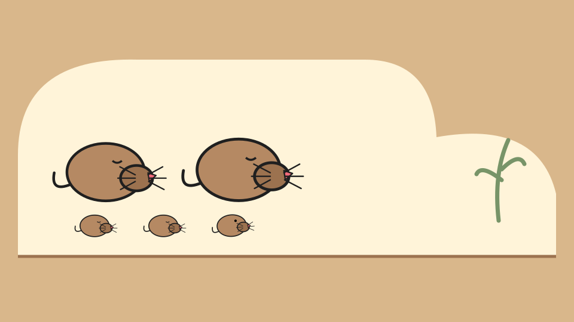

Watch
A fifteen-second story introduces a character and a moment of discovery.
EDUCATION USING INFORMATION TECHNOLOGY
Watch a story. Notice something new.
Then step inside and play.
Our first playable story · built for touch and mouse

01 / LITTLE SHREWWatch → PlayTHE EDUIT IDEA
EDUIT means Education Using Information Technology. It is the education-focused part of Play FoundUps Mall: a place for stories, games and discoveries, built on the shared FoundUps system.
Our first proof of concept brings short original stories and simple games together. The same little world becomes a video to enjoy and a game to explore.
This is an early prototype—not a validated curriculum or a promise of learning outcomes.
A fifteen-second story introduces a character and a moment of discovery.
A tremor, a root, a tiny movement. Small details invite attention.
Tap to help. Try again. Explore at your own pace with practice mode.
OUR STORY TIME
Watch Little Shrew, then help it wake up and find the root pocket. No downloads or account needed.
Watch & play →PART OF FOUNDUPS
EDUIT is an educational FoundUp within Play FoundUps Mall. Its education mall will use the same tiles and navigation, focused on learning. Little Shrew is our first playable proof of concept.
Explore FoundUps ↗